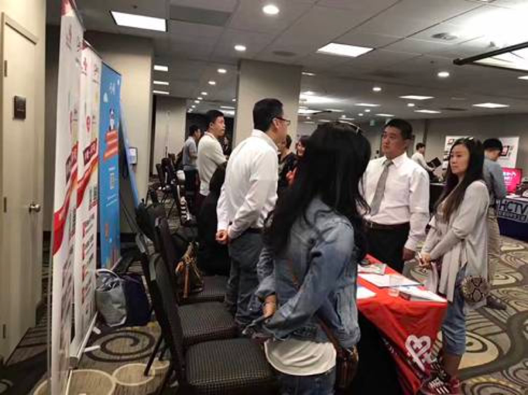
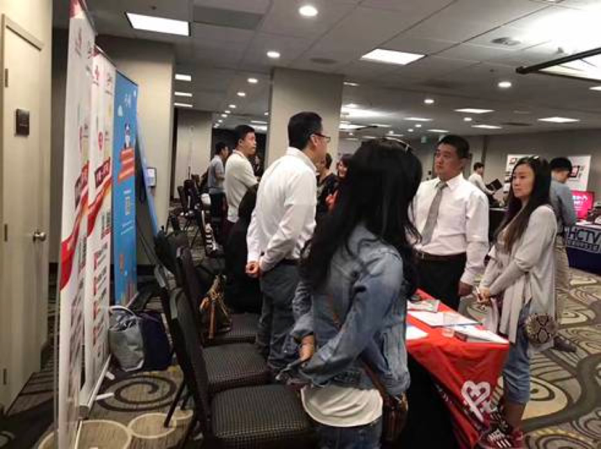

作为USC独家协办方，USC-CGSA( 南加大研究生学生会)携手HiJob举办的秋季双语招聘会。本次招聘会到场求职者超过200人，汇集了超过20家来自不同领域的大小型企业，包括中国联通，工商银行，BOSS直聘，吃货小分队等多家明星企业。USCCGSA和HiJob希望通过这次招聘会为南加州地区的求职者与寻找双语人才的企业提供双向选择和沟通的平台的同时，也为更多的华人留学生提供更多的应聘机会
 了解更多作为USC独家协办方，USC-CGSA( 南加大研究生学生会)携手HiJob举办的秋季双语招聘会。本次招聘会到场求职者超过200人，汇集了超过20家来自不同领域的大小型企业，包括中国联通，工商银行，BOSS直聘，吃货小分队等多家明星企业。USCCGSA和HiJob希望通过这次招聘会为南加州地区的求职者与寻找双语人才的企业提供双向选择和沟通的平台的同时，也为更多的华人留学生提供更多的应聘机会
 了解更多